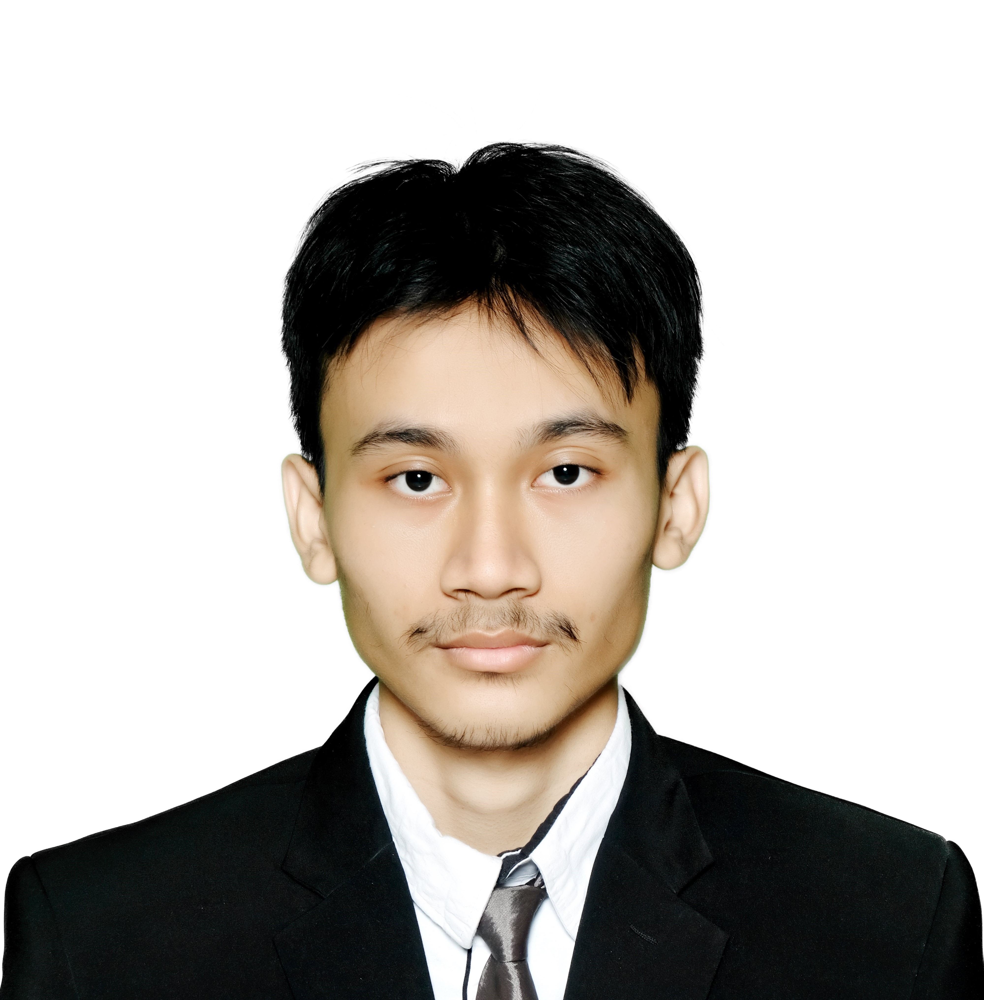
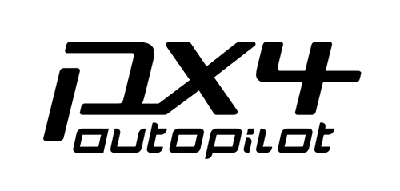
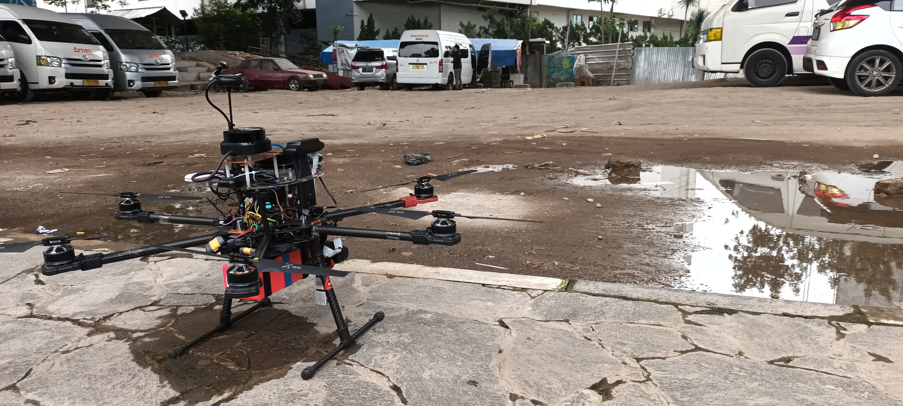
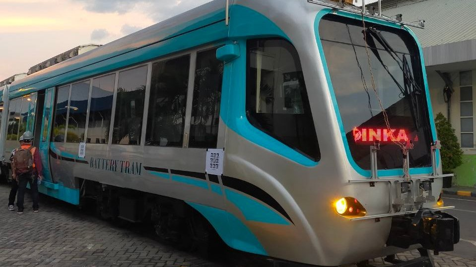
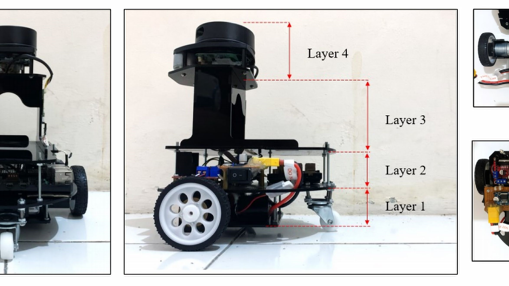
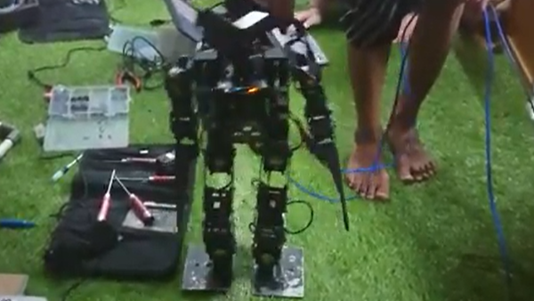
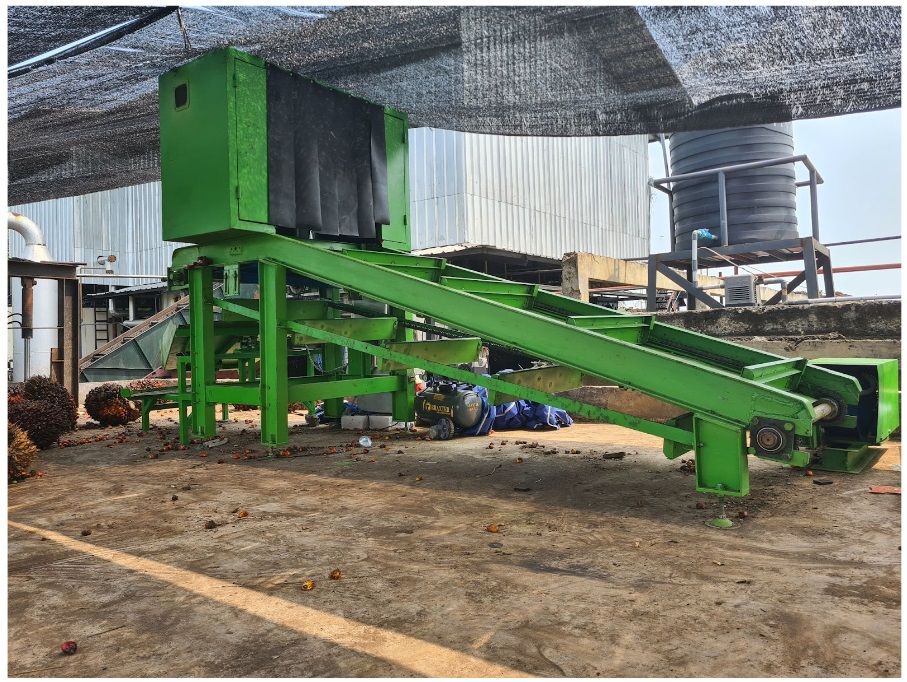

I'm Tyan, a robotics and embedded systems engineer with over four years of experience across autonomous aerial and ground systems, embedded control, and industrial deployment. I hold a bachelor's degree in Electrical Engineering from Institut Teknologi Bandung, where my thesis built an autonomous drone for bridge structural inspection — the work that pulled me into autonomy for good.
I work on guidance, navigation, and control end to end: prototyping the algorithm, implementing it in ROS2 and C++, and validating it in PX4 and Gazebo before it ever touches hardware. That includes waypoint navigation, local obstacle avoidance, probabilistic localization with AMCL, and state estimation from GNSS, IMU, and LiDAR.
Alongside the research side, I ship production firmware that has to survive the field. I've brought up custom embedded Linux on single-board computers, written Go and C/C++ for edge RTUs monitoring rivers at mining sites, and led a fertigation control rollout across 26 locations for the Johor Government. Deterministic execution, watchdogs, and local failover are not abstractions to me — they are what keeps a deployment alive when the network drops.
I care about the engineering discipline as much as the algorithm: version control, code review, containerized builds, and documentation clear enough that the next person can pick it up. I'm looking for work where control theory, clean software, and real hardware meet.

PT. Miota International Teknologi
Embedded Linux RTU bring-up, Go edge firmware, RTK GNSS positioning
PT. Aria Agri Indonesia
Developed IoT devices for agricultural use
PT. Movus Technologies Indonesia
Developed tracking devices to monitor car status
Laboratory of Advanced Robotics, Institut Teknologi Bandung
Autonomous drone, forklift localization, and autonomous tram research
PT. IROSTech Solusi Intelegen
Designed smart home prototype for educational purposes
Institut Teknologi Bandung
Thesis: Visual Investigation of Bridge Damage Using Autonomous Drone

Offboard control and navigation stack in ROS2 Humble with PX4 SITL and Gazebo Harmonic — waypoint trajectory generation, potential-field local avoidance, and RViz2 inspection tooling.

Autonomous UAV platform integrating flight control, onboard perception, and mission architecture for automated structural survey of bridges.
Porting a legacy ROS mobile-manipulator system to ROS2 and training a TD3 policy for learned navigation control, integrated back into the ROS2 control stack.

ITB-INKA collaboration integrating GNSS, LiDAR, RADAR and cameras with an NVIDIA DRIVE AGX compute platform for autonomous operation.

Indoor localization for warehouse automation — LiDAR and IMU fusion, HectorSLAM mapping, and AMCL localization in ROS and Gazebo.

Competition robot with computer vision and coordinated multi-robot gameplay, built by a five-person electrical division I led.

A machine that automatically sorts oil palm fruits by ripeness using a computer vision-based system, improving accuracy, efficiency, and consistency in the grading process.